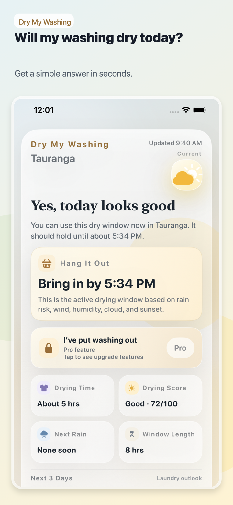
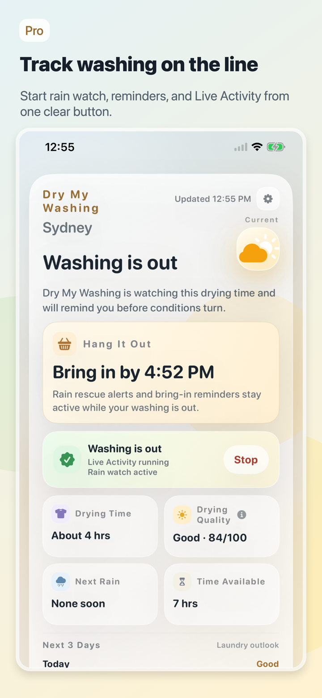
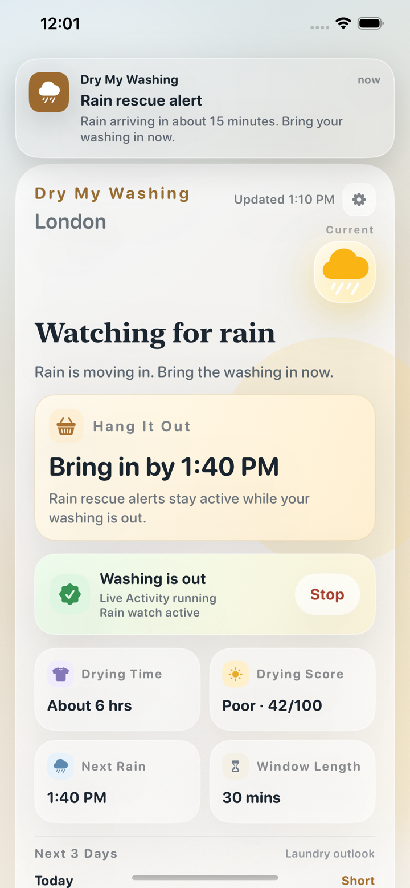

Can I put washing out now?
Get a plain yes, wait, or keep it inside answer based on your local forecast.
Laundry weather forecasts made simple
Dry My Washing turns the weather into one practical laundry answer: put it out now, wait for a better drying window, or bring it in before rain.

Get a plain yes, wait, or keep it inside answer based on your local forecast.
See the strongest stretch of dry, bright, breezy weather before you start a load.
Dry My Washing Pro can warn you when showers are due and your washing is out.
Compare sun, wind, humidity, cloud, and rain risk in one easy score.
Check the laundry forecast from your iPhone without opening the app.
Unlock washing-out tracking, Live Activities, bring-in reminders, and rain rescue alerts.


Built for real washing days
A normal forecast tells you temperature, rain, wind, humidity, and cloud. Dry My Washing turns those signals into the question people actually ask: will the washing dry outside?
It is designed for New Zealand weather, quick decisions, and the awkward days where the sky looks fine but rain is moving in later.
Free laundry weather guides